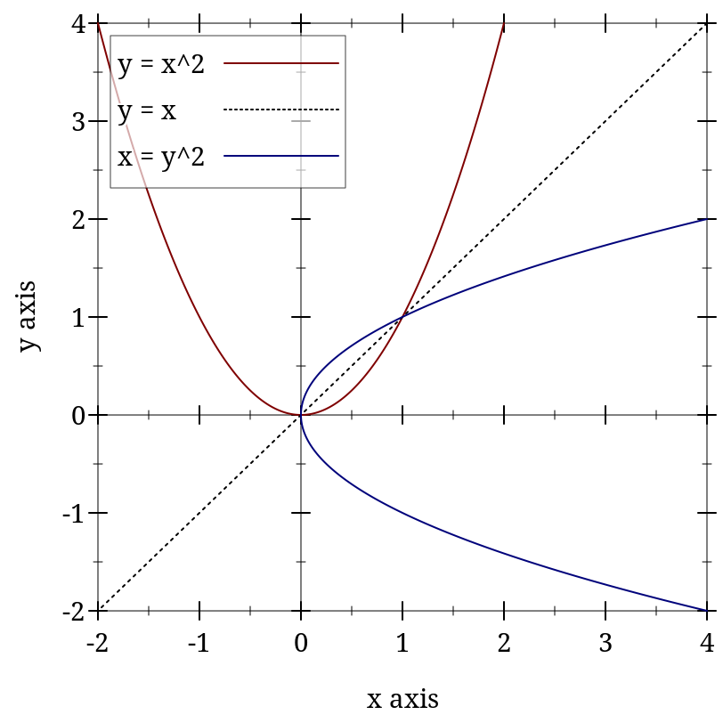
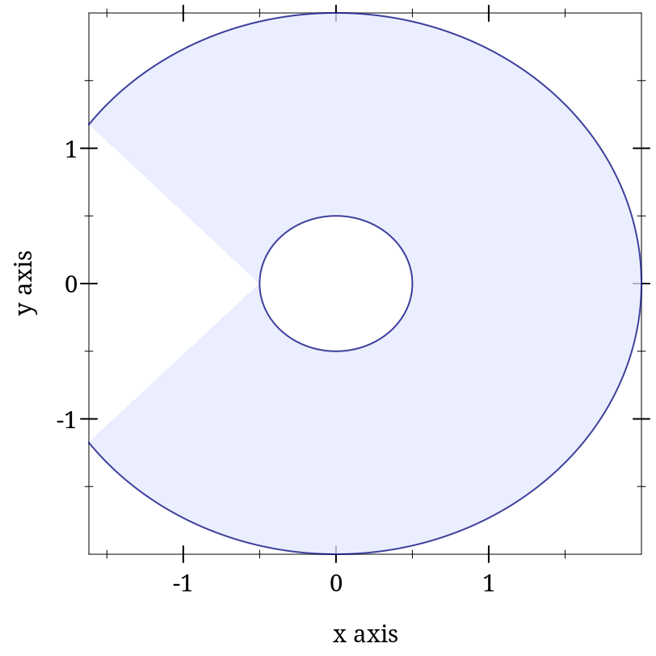

3 2D Renderers
| (require plot) | package： plot-gui-lib |
3.1 2D Renderer Function Arguments
Required (and possibly optional) arguments representing the graph to plot.
Optional keyword arguments for overriding calculated bounds, with the default value #f.
Optional keyword arguments that determine the appearance of the plot.
The optional keyword argument #:label, which specifies the name of the renderer in the legend.
We will take function, perhaps the most commonly used renderer-producing function, as an example.
Graph arguments. The first argument to function is the required f, the function to plot. It is followed by two optional arguments x-min and x-max, which specify the renderer’s x bounds. (If not given, the x bounds will be the plot area x bounds, as requested by another renderer or specified to plot using #:x-min and #:x-max.)
These three arguments define the graph of the function f, a possibly infinite set of pairs of points x,(f x). An infinite graph cannot be plotted directly, so the renderer must approximately plot the points in it. The renderer returned by function does this by drawing lines connected end-to-end.
Overriding bounds arguments. Next in function’s argument list are the keyword arguments #:y-min and #:y-max, which override the renderer’s calculated y bounds if given.
Appearance arguments. The next keyword argument is #:samples, which determines the quality of the renderer’s approximate plot (higher is better). Following #:samples are #:color, #:width, #:style and #:alpha, which determine the color, width, style and opacity of the lines comprising the plot.
In general, the keyword arguments that determine the appearance of plots follow consistent naming conventions. The most common keywords are #:color (for fill and line colors), #:width (for line widths), #:style (for fill and line styles) and #:alpha. When a function needs both a fill color and a line color, the fill color is given using #:color, and the line color is given using #:line-color (or some variation, such as #:line1-color). Styles follow the same rule.
Every appearance keyword argument defaults to the value of a parameter. This allows whole families of plots to be altered with little work. For example, setting (line-color 3) causes every subsequent renderer that draws connected lines to draw its lines in blue.
Label argument. Lastly, there is #:label. If given, the function renderer will generate a label entry that plot puts in the legend.
Not every renderer-producing function has a #:label argument; for example, error-bars.
3.2 2D Point Renderers
函数
(points vs [ #:x-min x-min #:x-max x-max #:y-min y-min #:y-max y-max #:sym sym #:color color #:fill-color fill-color #:x-jitter x-jitter #:y-jitter y-jitter #:size size #:line-width line-width #:alpha alpha #:label label]) → renderer2d? vs : (sequence/c (sequence/c #:min-count 2 real?)) x-min : (or/c rational? #f) = #f x-max : (or/c rational? #f) = #f y-min : (or/c rational? #f) = #f y-max : (or/c rational? #f) = #f sym : point-sym/c = (point-sym) color : plot-color/c = (point-color) fill-color : (or/c plot-color/c 'auto) = 'auto x-jitter : (>=/c 0) = (point-x-jitter) y-jitter : (>=/c 0) = (point-y-jitter) size : (>=/c 0) = (point-size) line-width : (>=/c 0) = (point-line-width) alpha : (real-in 0 1) = (point-alpha) label : (or/c string? #f) = #f
> (parameterize ([plot-width 150] [plot-height 150] [plot-x-label #f] [plot-y-label #f]) (define xs (build-list 20 (λ _ (random)))) (define ys (build-list 20 (λ _ (random)))) (list (plot (points (map vector xs ys))) (plot (points (map vector xs ys) #:x-min 0 #:x-max 1 #:y-min 0 #:y-max 1)))) '( )
The #:sym argument may be any integer, a Unicode character or string, or a symbol in known-point-symbols. Use an integer when you need different points but don’t care exactly what they are.
When x-jitter is non-zero, all points are translated by a random amount at most x-jitter from their original position along the x-axis. A non-zero y-jitter similarly translates points along the y-axis. Jitter is added in both directions so total spread is twice the value given. To be precise, each point p is moved to a random location inside a rectangle centered at p with width at most twice x-jitter and height at most twice y-jitter subject to the constraint that new points lie within [x-min, x-max] and [y-min, y-max] if these bounds are non-#f.
> (plot (points (for/list ([i (in-range 1000)]) (list 0 0)) #:alpha 0.4 #:x-jitter 1 #:y-jitter 1 #:sym 'fullcircle1 #:color "blue") #:x-min -2 #:x-max 2 #:y-min -2 #:y-max 2)
More examples of jittering: Another Look at the California Vaccination Data and Typing with Pleasure
To highlight the size of a dense (or overplotted) sample.
To see the distribution of 1-dimensional data; as a substitute for box or violin plots.
To anonymize spatial data, showing i.e. an office’s neighborhood but hiding its address.
函数
(vector-field f [ x-min x-max y-min y-max #:samples samples #:scale scale #:color color #:line-width line-width #:line-style line-style #:alpha alpha #:label label]) → renderer2d?
f :
(or/c (-> real? real? (sequence/c real?)) (-> (vector/c real? real?) (sequence/c real?))) x-min : (or/c rational? #f) = #f x-max : (or/c rational? #f) = #f y-min : (or/c rational? #f) = #f y-max : (or/c rational? #f) = #f samples : exact-positive-integer? = (vector-field-samples)
scale : (or/c real? (one-of/c 'auto 'normalized)) = (vector-field-scale) color : plot-color/c = (vector-field-color) line-width : (>=/c 0) = (vector-field-line-width) line-style : plot-pen-style/c = (vector-field-line-style) alpha : (real-in 0 1) = (vector-field-alpha) label : (or/c string? #f) = #f
If scale is a real number, arrow lengths are multiplied by scale. If 'auto, the scale is calculated in a way that keeps arrows from overlapping. If 'normalized, each arrow is made the same length: the maximum length that would have been allowed by 'auto.
函数
(error-bars bars [ #:x-min x-min #:x-max x-max #:y-min y-min #:y-max y-max #:color color #:line-width line-width #:line-style line-style #:width width #:alpha alpha]) → renderer2d? bars : (sequence/c (sequence/c #:min-count 3 real?)) x-min : (or/c rational? #f) = #f x-max : (or/c rational? #f) = #f y-min : (or/c rational? #f) = #f y-max : (or/c rational? #f) = #f color : plot-color/c = (error-bar-color) line-width : (>=/c 0) = (error-bar-line-width) line-style : plot-pen-style/c = (error-bar-line-style) width : (>=/c 0) = (error-bar-width) alpha : (real-in 0 1) = (error-bar-alpha)
> (plot (list (function sqr 1 7) (error-bars (list (vector 2 4 12) (vector 4 16 20) (vector 6 36 10)))))

函数
(candlesticks candles [ #:x-min x-min #:x-max x-max #:y-min y-min #:y-max y-max #:up-color up-color #:down-color down-color #:line-width line-width #:line-style line-style #:width width #:alpha alpha]) → renderer2d? candles : (sequence/c (sequence/c #:min-count 5 real?)) x-min : (or/c rational? #f) = #f x-max : (or/c rational? #f) = #f y-min : (or/c rational? #f) = #f y-max : (or/c rational? #f) = #f up-color : plot-color/c = (candlestick-up-color) down-color : plot-color/c = (candlestick-down-color) line-width : (>=/c 0) = (candlestick-line-width) line-style : plot-pen-style/c = (candlestick-line-style) width : (>=/c 0) = (candlestick-width) alpha : (real-in 0 1) = (candlestick-alpha)
> (plot (list (candlesticks (list (vector 2 4 12 4 8) (vector 4 16 20 8 12) (vector 6 24 36 10 24)))))
3.3 2D Line Renderers
函数
(function f [ x-min x-max #:y-min y-min #:y-max y-max #:samples samples #:color color #:width width #:style style #:alpha alpha #:label label]) → renderer2d? f : (real? . -> . real?) x-min : (or/c rational? #f) = #f x-max : (or/c rational? #f) = #f y-min : (or/c rational? #f) = #f y-max : (or/c rational? #f) = #f samples : (and/c exact-integer? (>=/c 2)) = (line-samples) color : plot-color/c = (line-color) width : (>=/c 0) = (line-width) style : plot-pen-style/c = (line-style) alpha : (real-in 0 1) = (line-alpha) label : (or/c string? #f) = #f
函数
(inverse f [ y-min y-max #:x-min x-min #:x-max x-max #:samples samples #:color color #:width width #:style style #:alpha alpha #:label label]) → renderer2d? f : (real? . -> . real?) y-min : (or/c rational? #f) = #f y-max : (or/c rational? #f) = #f x-min : (or/c rational? #f) = #f x-max : (or/c rational? #f) = #f samples : (and/c exact-integer? (>=/c 2)) = (line-samples) color : plot-color/c = (line-color) width : (>=/c 0) = (line-width) style : plot-pen-style/c = (line-style) alpha : (real-in 0 1) = (line-alpha) label : (or/c string? #f) = #f
> (plot (list (axes) (function sqr -2 2 #:label "y = x^2") (function (λ (x) x) #:color 0 #:style 'dot #:label "y = x") (inverse sqr -2 2 #:color 3 #:label "x = y^2"))) 
函数
(lines vs [ #:x-min x-min #:x-max x-max #:y-min y-min #:y-max y-max #:color color #:width width #:style style #:alpha alpha #:label label]) → renderer2d? vs : (sequence/c (sequence/c #:min-count 2 real?)) x-min : (or/c rational? #f) = #f x-max : (or/c rational? #f) = #f y-min : (or/c rational? #f) = #f y-max : (or/c rational? #f) = #f color : plot-color/c = (line-color) width : (>=/c 0) = (line-width) style : plot-pen-style/c = (line-style) alpha : (real-in 0 1) = (line-alpha) label : (or/c string? #f) = #f
> (plot (lines (reverse (for/fold ([lst (list (vector 0 0))]) ([i (in-range 1 200)]) (match-define (vector x y) (first lst)) (cons (vector i (+ y (* 1/100 (- (random) 1/2)))) lst))) #:color 6 #:label "Random walk"))
The parametric and polar functions are defined using lines.
函数
(parametric f t-min t-max [ #:x-min x-min #:x-max x-max #:y-min y-min #:y-max y-max #:samples samples #:color color #:width width #:style style #:alpha alpha #:label label]) → renderer2d? f : (real? . -> . (sequence/c real?)) t-min : rational? t-max : rational? x-min : (or/c rational? #f) = #f x-max : (or/c rational? #f) = #f y-min : (or/c rational? #f) = #f y-max : (or/c rational? #f) = #f samples : (and/c exact-integer? (>=/c 2)) = (line-samples) color : plot-color/c = (line-color) width : (>=/c 0) = (line-width) style : plot-pen-style/c = (line-style) alpha : (real-in 0 1) = (line-alpha) label : (or/c string? #f) = #f

函数
(polar f [ θ-min θ-max #:x-min x-min #:x-max x-max #:y-min y-min #:y-max y-max #:samples samples #:color color #:width width #:style style #:alpha alpha #:label label]) → renderer2d? f : (real? . -> . real?) θ-min : real? = 0 θ-max : real? = (* 2 pi) x-min : (or/c rational? #f) = #f x-max : (or/c rational? #f) = #f y-min : (or/c rational? #f) = #f y-max : (or/c rational? #f) = #f samples : (and/c exact-integer? (>=/c 2)) = (line-samples) color : plot-color/c = (line-color) width : (>=/c 0) = (line-width) style : plot-pen-style/c = (line-style) alpha : (real-in 0 1) = (line-alpha) label : (or/c string? #f) = #f
函数
(density xs [ bw-adjust ws #:x-min x-min #:x-max x-max #:y-min y-min #:y-max y-max #:samples samples #:color color #:width width #:style style #:alpha alpha #:label label]) → renderer2d? xs : (sequence/c real?) bw-adjust : (>/c 0) = 1 ws : (or/c (sequence/c (>=/c 0)) #f) = #f x-min : (or/c rational? #f) = #f x-max : (or/c rational? #f) = #f y-min : (or/c rational? #f) = #f y-max : (or/c rational? #f) = #f samples : (and/c exact-integer? (>=/c 2)) = (line-samples) color : plot-color/c = (line-color) width : (>=/c 0) = (line-width) style : plot-pen-style/c = (line-style) alpha : (real-in 0 1) = (line-alpha) label : (or/c string? #f) = #f
> (plot (list (function (λ (x) (cond [(or (x . < . -1) (x . > . 1)) 0] [(x . < . 0) (+ 1 x)] [(x . >= . 0) (- 1 x)])) -1.5 1.5 #:label "Density") (density (build-list 2000 (λ (n) (- (+ (random) (random)) 1))) #:color 0 #:width 2 #:style 'dot #:label "Est. density")))
函数
(hrule y [ x-min x-max #:color color #:width width #:style style #:alpha alpha #:label label]) → renderer2d? y : real? x-min : (or/c rational? #f) = #f x-max : (or/c rational? #f) = #f color : plot-color/c = (line-color) width : (>=/c 0) = (line-width) style : plot-pen-style/c = (line-style) alpha : (real-in 0 1) = (line-alpha) label : (or/c string? #f) = #f
函数
(vrule x [ y-min y-max #:color color #:width width #:style style #:alpha alpha #:label label]) → renderer2d? x : real? y-min : (or/c rational? #f) = #f y-max : (or/c rational? #f) = #f color : plot-color/c = (line-color) width : (>=/c 0) = (line-width) style : plot-pen-style/c = (line-style) alpha : (real-in 0 1) = (line-alpha) label : (or/c string? #f) = #f
3.4 2D Interval Renderers
These renderers each correspond with a line renderer, and graph the area between two lines.
函数
(function-interval f1 f2 [ x-min x-max #:y-min y-min #:y-max y-max #:samples samples #:color color #:style style #:line1-color line1-color #:line1-width line1-width #:line1-style line1-style #:line2-color line2-color #:line2-width line2-width #:line2-style line2-style #:alpha alpha #:label label]) → renderer2d? f1 : (real? . -> . real?) f2 : (real? . -> . real?) x-min : (or/c rational? #f) = #f x-max : (or/c rational? #f) = #f y-min : (or/c rational? #f) = #f y-max : (or/c rational? #f) = #f samples : (and/c exact-integer? (>=/c 2)) = (line-samples) color : plot-color/c = (interval-color) style : plot-brush-style/c = (interval-style) line1-color : plot-color/c = (interval-line1-color) line1-width : (>=/c 0) = (interval-line1-width) line1-style : plot-pen-style/c = (interval-line1-style) line2-color : plot-color/c = (interval-line2-color) line2-width : (>=/c 0) = (interval-line2-width) line2-style : plot-pen-style/c = (interval-line2-style) alpha : (real-in 0 1) = (interval-alpha) label : (or/c string? #f) = #f
> (plot (function-interval (λ (x) 0) (λ (x) (exp (* -1/2 (sqr x)))) -4 4 #:line1-style 'transparent))
函数
(inverse-interval f1 f2 [ y-min y-max #:x-min x-min #:x-max x-max #:samples samples #:color color #:style style #:line1-color line1-color #:line1-width line1-width #:line1-style line1-style #:line2-color line2-color #:line2-width line2-width #:line2-style line2-style #:alpha alpha #:label label]) → renderer2d? f1 : (real? . -> . real?) f2 : (real? . -> . real?) y-min : (or/c rational? #f) = #f y-max : (or/c rational? #f) = #f x-min : (or/c rational? #f) = #f x-max : (or/c rational? #f) = #f samples : (and/c exact-integer? (>=/c 2)) = (line-samples) color : plot-color/c = (interval-color) style : plot-brush-style/c = (interval-style) line1-color : plot-color/c = (interval-line1-color) line1-width : (>=/c 0) = (interval-line1-width) line1-style : plot-pen-style/c = (interval-line1-style) line2-color : plot-color/c = (interval-line2-color) line2-width : (>=/c 0) = (interval-line2-width) line2-style : plot-pen-style/c = (interval-line2-style) alpha : (real-in 0 1) = (interval-alpha) label : (or/c string? #f) = #f
> (plot (inverse-interval sin (λ (x) 0) (- pi) pi #:line2-style 'long-dash))
函数
(lines-interval v1s v2s [ #:x-min x-min #:x-max x-max #:y-min y-min #:y-max y-max #:color color #:style style #:line1-color line1-color #:line1-width line1-width #:line1-style line1-style #:line2-color line2-color #:line2-width line2-width #:line2-style line2-style #:alpha alpha #:label label]) → renderer2d? v1s : (sequence/c (sequence/c #:min-count 2 real?)) v2s : (sequence/c (sequence/c #:min-count 2 real?)) x-min : (or/c rational? #f) = #f x-max : (or/c rational? #f) = #f y-min : (or/c rational? #f) = #f y-max : (or/c rational? #f) = #f color : plot-color/c = (interval-color) style : plot-brush-style/c = (interval-style) line1-color : plot-color/c = (interval-line1-color) line1-width : (>=/c 0) = (interval-line1-width) line1-style : plot-pen-style/c = (interval-line1-style) line2-color : plot-color/c = (interval-line2-color) line2-width : (>=/c 0) = (interval-line2-width) line2-style : plot-pen-style/c = (interval-line2-style) alpha : (real-in 0 1) = (interval-alpha) label : (or/c string? #f) = #f
> (plot (list (tick-grid) (lines-interval (list #(0 0) #(1 1/2)) (list #(0 1) #(1 3/2)) #:color 4 #:line1-color 4 #:line2-color 4 #:label "Parallelogram")))
函数
(parametric-interval f1 f2 t-min t-max [ #:x-min x-min #:x-max x-max #:y-min y-min #:y-max y-max #:samples samples #:color color #:style style #:line1-color line1-color #:line1-width line1-width #:line1-style line1-style #:line2-color line2-color #:line2-width line2-width #:line2-style line2-style #:alpha alpha #:label label]) → renderer2d? f1 : (real? . -> . (sequence/c real?)) f2 : (real? . -> . (sequence/c real?)) t-min : rational? t-max : rational? x-min : (or/c rational? #f) = #f x-max : (or/c rational? #f) = #f y-min : (or/c rational? #f) = #f y-max : (or/c rational? #f) = #f samples : (and/c exact-integer? (>=/c 2)) = (line-samples) color : plot-color/c = (interval-color) style : plot-brush-style/c = (interval-style) line1-color : plot-color/c = (interval-line1-color) line1-width : (>=/c 0) = (interval-line1-width) line1-style : plot-pen-style/c = (interval-line1-style) line2-color : plot-color/c = (interval-line2-color) line2-width : (>=/c 0) = (interval-line2-width) line2-style : plot-pen-style/c = (interval-line2-style) alpha : (real-in 0 1) = (interval-alpha) label : (or/c string? #f) = #f
> (define (f1 t) (vector (* 2 (cos (* 4/5 t))) (* 2 (sin (* 4/5 t)))))
> (define (f2 t) (vector (* 1/2 (cos t)) (* 1/2 (sin t)))) > (plot (parametric-interval f1 f2 (- pi) pi)) 
函数
(polar-interval f1 f2 [ θ-min θ-max #:x-min x-min #:x-max x-max #:y-min y-min #:y-max y-max #:samples samples #:color color #:style style #:line1-color line1-color #:line1-width line1-width #:line1-style line1-style #:line2-color line2-color #:line2-width line2-width #:line2-style line2-style #:alpha alpha #:label label]) → renderer2d? f1 : (real? . -> . real?) f2 : (real? . -> . real?) θ-min : rational? = 0 θ-max : rational? = (* 2 pi) x-min : (or/c rational? #f) = #f x-max : (or/c rational? #f) = #f y-min : (or/c rational? #f) = #f y-max : (or/c rational? #f) = #f samples : (and/c exact-integer? (>=/c 2)) = (line-samples) color : plot-color/c = (interval-color) style : plot-brush-style/c = (interval-style) line1-color : plot-color/c = (interval-line1-color) line1-width : (>=/c 0) = (interval-line1-width) line1-style : plot-pen-style/c = (interval-line1-style) line2-color : plot-color/c = (interval-line2-color) line2-width : (>=/c 0) = (interval-line2-width) line2-style : plot-pen-style/c = (interval-line2-style) alpha : (real-in 0 1) = (interval-alpha) label : (or/c string? #f) = #f
> (define (f1 θ) (+ 1/2 (* 1/6 (cos (* 5 θ))))) > (define (f2 θ) (+ 1 (* 1/4 (cos (* 10 θ)))))
> (plot (list (polar-axes #:number 10) (polar-interval f1 f2 #:label "[f1,f2]")))
3.5 2D Contour (Isoline) Renderers
函数
(isoline f z [ x-min x-max y-min y-max #:samples samples #:color color #:width width #:style style #:alpha alpha #:label label]) → renderer2d? f : (real? real? . -> . real?) z : real? x-min : (or/c rational? #f) = #f x-max : (or/c rational? #f) = #f y-min : (or/c rational? #f) = #f y-max : (or/c rational? #f) = #f samples : (and/c exact-integer? (>=/c 2)) = (contour-samples) color : plot-color/c = (line-color) width : (>=/c 0) = (line-width) style : plot-pen-style/c = (line-style) alpha : (real-in 0 1) = (line-alpha) label : (or/c string? #f) = #f
This function would have been named contour, except the name was already used by a deprecated function. It may be renamed in the future, with isoline as an alias.
函数
(contours f [ x-min x-max y-min y-max #:samples samples #:levels levels #:colors colors #:widths widths #:styles styles #:alphas alphas #:label label]) → renderer2d? f : (real? real? . -> . real?) x-min : (or/c rational? #f) = #f x-max : (or/c rational? #f) = #f y-min : (or/c rational? #f) = #f y-max : (or/c rational? #f) = #f samples : (and/c exact-integer? (>=/c 2)) = (contour-samples)
levels : (or/c 'auto exact-positive-integer? (listof real?)) = (contour-levels) colors : (plot-colors/c (listof real?)) = (contour-colors) widths : (pen-widths/c (listof real?)) = (contour-widths) styles : (plot-pen-styles/c (listof real?)) = (contour-styles) alphas : (alphas/c (listof real?)) = (contour-alphas) label : (or/c string? #f) = #f
When levels is 'auto, the number of contour lines and their values are chosen the same way as axis tick positions; i.e. they are chosen to be simple. When levels is a number, contours chooses that number of values, evenly spaced, within the output range of f. When levels is a list, contours plots contours at the values in levels.
The appearance keyword arguments assign a color, width, style and opacity to each contour line. Each can be given as a list or as a function from a list of output values of f to a list of appearance values. In both cases, when there are more contour lines than list elements, the colors, widths, styles and alphas in the list repeat.
> (plot (contours (λ (x y) (- (sqr x) (sqr y))) -2 2 -2 2 #:levels 4 #:colors '("blue" "red") #:widths '(4 1) #:styles '(solid dot)))
函数
(contour-intervals f [ x-min x-max y-min y-max #:samples samples #:levels levels #:colors colors #:styles styles #:contour-colors contour-colors #:contour-widths contour-widths #:contour-styles contour-styles #:alphas alphas #:label label]) → renderer2d? f : (real? real? . -> . real?) x-min : (or/c rational? #f) = #f x-max : (or/c rational? #f) = #f y-min : (or/c rational? #f) = #f y-max : (or/c rational? #f) = #f samples : (and/c exact-integer? (>=/c 2)) = (contour-samples)
levels : (or/c 'auto exact-positive-integer? (listof real?)) = (contour-levels)
colors : (plot-colors/c (listof ivl?)) = (contour-interval-colors)
styles : (plot-brush-styles/c (listof ivl?)) = (contour-interval-styles)
contour-colors : (plot-colors/c (listof real?)) = (contour-colors)
contour-widths : (pen-widths/c (listof real?)) = (contour-widths)
contour-styles : (plot-pen-styles/c (listof real?)) = (contour-styles) alphas : (alphas/c (listof ivl?)) = (contour-interval-alphas) label : (or/c string? #f) = #f
> (plot (list (contour-intervals (λ (x y) (- (sqr x) (sqr y))) -2 2 -2 2 #:label "z") (vector-field (λ (x y) (vector (* 2 x) (* -2 y))) #:color "black" #:label "Gradient")))
3.6 2D Rectangle Renderers
函数
(rectangles rects [ #:x-min x-min #:x-max x-max #:y-min y-min #:y-max y-max #:color color #:style style #:line-color line-color #:line-width line-width #:line-style line-style #:alpha alpha #:label label]) → renderer2d? rects : (sequence/c (sequence/c #:min-count 2 ivl?)) x-min : (or/c rational? #f) = #f x-max : (or/c rational? #f) = #f y-min : (or/c rational? #f) = #f y-max : (or/c rational? #f) = #f color : plot-color/c = (rectangle-color) style : plot-brush-style/c = (rectangle-style) line-color : plot-color/c = (rectangle-line-color) line-width : (>=/c 0) = (rectangle-line-width) line-style : plot-pen-style/c = (rectangle-line-style) alpha : (real-in 0 1) = (rectangle-alpha) label : (or/c string? #f) = #f
The rectangles are given as a sequence of sequences of intervals—
函数
(area-histogram f bin-bounds [ #:x-min x-min #:x-max x-max #:y-min y-min #:y-max y-max #:samples samples #:color color #:style style #:line-color line-color #:line-width line-width #:line-style line-style #:alpha alpha #:label label]) → renderer2d? f : (real? . -> . real?) bin-bounds : (sequence/c real?) x-min : (or/c rational? #f) = #f x-max : (or/c rational? #f) = #f y-min : (or/c rational? #f) = 0 y-max : (or/c rational? #f) = #f samples : (and/c exact-integer? (>=/c 2)) = (line-samples) color : plot-color/c = (rectangle-color) style : plot-brush-style/c = (rectangle-style) line-color : plot-color/c = (rectangle-line-color) line-width : (>=/c 0) = (rectangle-line-width) line-style : plot-pen-style/c = (rectangle-line-style) alpha : (real-in 0 1) = (rectangle-alpha) label : (or/c string? #f) = #f
> (require (only-in plot/utils linear-seq)) > (define (f x) (exp (* -1/2 (sqr x))))
> (plot (list (area-histogram f (linear-seq -4 4 10)) (function f -4 4)))
函数
(discrete-histogram cat-vals [ #:x-min x-min #:x-max x-max #:y-min y-min #:y-max y-max #:gap gap #:skip skip #:invert? invert? #:color color #:style style #:line-color line-color #:line-width line-width #:line-style line-style #:alpha alpha #:label label #:add-ticks? add-ticks? #:far-ticks? far-ticks?]) → renderer2d?
cat-vals :
(sequence/c (or/c (vector/c any/c (or/c real? ivl? #f)) (list/c any/c (or/c real? ivl? #f)))) x-min : (or/c rational? #f) = 0 x-max : (or/c rational? #f) = #f y-min : (or/c rational? #f) = 0 y-max : (or/c rational? #f) = #f gap : (real-in 0 1) = (discrete-histogram-gap) skip : (>=/c 0) = (discrete-histogram-skip) invert? : boolean? = (discrete-histogram-invert?) color : plot-color/c = (rectangle-color) style : plot-brush-style/c = (rectangle-style) line-color : plot-color/c = (rectangle-line-color) line-width : (>=/c 0) = (rectangle-line-width) line-style : plot-pen-style/c = (rectangle-line-style) alpha : (real-in 0 1) = (rectangle-alpha) label : (or/c string? #f) = #f add-ticks? : boolean? = #t far-ticks? : boolean? = #f
> (plot (discrete-histogram (list #(A 1) #(B 2) #(B 3) (vector 'C (ivl 0.5 1.5)))))
Use #:invert? #t to draw horizontal bars. See stacked-histogram for an example.
Each bar takes up exactly one plot unit, and is drawn with (* 1/2 gap) empty space on each side. Bar number i is drawn at (+ x-min (* i skip)). Thus, the first bar (i = 0) is drawn in the interval between x-min (default 0) and (+ x-min 1).
> (plot (list (discrete-histogram (list #(a 1) #(b 2) #(c 3) #(d 2) #(e 4) #(f 2.5) #(g 1)) #:label "Numbers per letter") (discrete-histogram (list #(1 1) #(4 2) #(3 1.5)) #:x-min 8 #:label "Numbers per number" #:color 2 #:line-color 2)))
> (plot (list (discrete-histogram '(#(Eggs 1.5) #(Bacon 2.5) #(Pancakes 3.5)) #:skip 2.5 #:x-min 0 #:label "AMD") (discrete-histogram '(#(Eggs 1.4) #(Bacon 2.3) #(Pancakes 3.1)) #:skip 2.5 #:x-min 1 #:label "Intel" #:color 2 #:line-color 2)) #:x-label "Breakfast Food" #:y-label "Cooking Time (minutes)" #:title "Cooking Times For Breakfast Food, Per Processor")

函数
(stacked-histogram cat-vals [ #:x-min x-min #:x-max x-max #:y-min y-min #:y-max y-max #:gap gap #:skip skip #:invert? invert? #:colors colors #:styles styles #:line-colors line-colors #:line-widths line-widths #:line-styles line-styles #:alphas alphas #:labels labels #:add-ticks? add-ticks? #:far-ticks? far-ticks?]) → (listof renderer2d?)
cat-vals :
(sequence/c (or/c (vector/c any/c (sequence/c real?)) (list/c any/c (sequence/c real?)))) x-min : (or/c rational? #f) = 0 x-max : (or/c rational? #f) = #f y-min : (or/c rational? #f) = 0 y-max : (or/c rational? #f) = #f gap : (real-in 0 1) = (discrete-histogram-gap) skip : (>=/c 0) = (discrete-histogram-skip) invert? : boolean? = (discrete-histogram-invert?) colors : (plot-colors/c nat/c) = (stacked-histogram-colors)
styles : (plot-brush-styles/c nat/c) = (stacked-histogram-styles)
line-colors : (plot-colors/c nat/c) = (stacked-histogram-line-colors)
line-widths : (pen-widths/c nat/c) = (stacked-histogram-line-widths)
line-styles : (plot-pen-styles/c nat/c) = (stacked-histogram-line-styles) alphas : (alphas/c nat/c) = (stacked-histogram-alphas) labels : (labels/c nat/c) = '(#f) add-ticks? : boolean? = #t far-ticks? : boolean? = #f
> (plot (stacked-histogram (list #(a (1 1 1)) #(b (1.5 3)) #(c ()) #(d (1/2))) #:invert? #t #:labels '("Red" #f "Blue")) #:legend-anchor 'top-right)
3.7 2D Plot Decoration Renderers
函数
(x-axis [ y #:ticks? ticks? #:labels? labels? #:far? far? #:alpha alpha]) → renderer2d? y : real? = 0 ticks? : boolean? = (x-axis-ticks?) labels? : boolean? = (x-axis-labels?) far? : boolean? = (x-axis-far?) alpha : (real-in 0 1) = (x-axis-alpha)
函数
(y-axis [ x #:ticks? ticks? #:labels? labels? #:far? far? #:alpha alpha]) → renderer2d? x : real? = 0 ticks? : boolean? = (y-axis-ticks?) labels? : boolean? = (y-axis-labels?) far? : boolean? = (y-axis-far?) alpha : (real-in 0 1) = (y-axis-alpha)
函数
(axes [ x y #:x-ticks? x-ticks? #:y-ticks? y-ticks? #:x-labels? x-labels? #:y-labels? y-labels? #:x-alpha x-alpha #:y-alpha y-alpha]) → (listof renderer2d?) x : real? = 0 y : real? = 0 x-ticks? : boolean? = (x-axis-ticks?) y-ticks? : boolean? = (y-axis-ticks?) x-labels? : boolean? = (x-axis-labels?) y-labels? : boolean? = (y-axis-labels?) x-alpha : (real-in 0 1) = (x-axis-alpha) y-alpha : (real-in 0 1) = (y-axis-alpha)
函数
(polar-axes [ #:number num #:ticks? ticks? #:labels? labels? #:alpha alpha]) → renderer2d? num : exact-nonnegative-integer? = (polar-axes-number) ticks? : boolean? = (polar-axes-ticks?) labels? : boolean? = (polar-axes-labels?) alpha : (real-in 0 1) = (polar-axes-alpha)
函数
函数
函数
(tick-grid) → (listof renderer2d?)
函数
(point-label v [ label #:color color #:size size #:face face #:family family #:anchor anchor #:angle angle #:point-color point-color #:point-fill-color point-fill-color #:point-size point-size #:point-line-width point-line-width #:point-sym point-sym #:alpha alpha]) → renderer2d? v : (sequence/c real?) label : (or/c string? #f) = #f color : plot-color/c = (plot-foreground) size : (>=/c 0) = (plot-font-size) face : (or/c string? #f) = (plot-font-face) family : font-family/c = (plot-font-family) anchor : anchor/c = (label-anchor) angle : real? = (label-angle) point-color : plot-color/c = (point-color) point-fill-color : (or/c plot-color/c 'auto) = 'auto point-size : (>=/c 0) = (label-point-size) point-line-width : (>=/c 0) = (point-line-width) point-sym : point-sym/c = 'fullcircle alpha : (real-in 0 1) = (label-alpha)
> (plot (list (function sqr 0 2) (point-label (vector 1 1))))
The remaining labeled-point functions are defined in terms of this one.
函数
(point-pict v pict [ #:anchor anchor #:point-color point-color #:point-fill-color point-fill-color #:point-size point-size #:point-line-width point-line-width #:point-sym point-sym #:alpha alpha]) → renderer2d? v : (sequence/c real?) pict : pict? anchor : anchor/c = (label-anchor) point-color : plot-color/c = (point-color) point-fill-color : (or/c plot-color/c 'auto) = 'auto point-size : (>=/c 0) = (label-point-size) point-line-width : (>=/c 0) = (point-line-width) point-sym : point-sym/c = 'fullcircle alpha : (real-in 0 1) = (label-alpha)
> (require pict)
> (plot (list (function sqr 0 2) (point-pict (vector 1 1) (standard-fish 40 15))))
The remaining labeled-pict functions are defined in terms of this one.
函数
(function-label f x [ label #:color color #:size size #:face face #:family family #:anchor anchor #:angle angle #:point-color point-color #:point-fill-color point-fill-color #:point-size point-size #:point-line-width point-line-width #:point-sym point-sym #:alpha alpha]) → renderer2d? f : (real? . -> . real?) x : real? label : (or/c string? #f) = #f color : plot-color/c = (plot-foreground) size : (>=/c 0) = (plot-font-size) face : (or/c string? #f) = (plot-font-face) family : font-family/c = (plot-font-family) anchor : anchor/c = (label-anchor) angle : real? = (label-angle) point-color : plot-color/c = (point-color) point-fill-color : (or/c plot-color/c 'auto) = 'auto point-size : (>=/c 0) = (label-point-size) point-line-width : (>=/c 0) = (point-line-width) point-sym : point-sym/c = 'fullcircle alpha : (real-in 0 1) = (label-alpha)
> (plot (list (function sin (- pi) pi) (function-label sin (* 1/6 pi) "(1/6 π, 1/2)" #:anchor 'right)))

函数
(function-pict f x pict [ #:anchor anchor #:point-color point-color #:point-fill-color point-fill-color #:point-size point-size #:point-line-width point-line-width #:point-sym point-sym #:alpha alpha]) → renderer2d? f : (real? . -> . real?) x : real? pict : pict? anchor : anchor/c = (label-anchor) point-color : plot-color/c = (point-color) point-fill-color : (or/c plot-color/c 'auto) = 'auto point-size : (>=/c 0) = (label-point-size) point-line-width : (>=/c 0) = (point-line-width) point-sym : point-sym/c = 'fullcircle alpha : (real-in 0 1) = (label-alpha)
函数
(inverse-label f y [ label #:color color #:size size #:face face #:family family #:anchor anchor #:angle angle #:point-color point-color #:point-fill-color point-fill-color #:point-size point-size #:point-line-width point-line-width #:point-sym point-sym #:alpha alpha]) → renderer2d? f : (real? . -> . real?) y : real? label : (or/c string? #f) = #f color : plot-color/c = (plot-foreground) size : (>=/c 0) = (plot-font-size) face : (or/c string? #f) = (plot-font-face) family : font-family/c = (plot-font-family) anchor : anchor/c = (label-anchor) angle : real? = (label-angle) point-color : plot-color/c = (point-color) point-fill-color : (or/c plot-color/c 'auto) = 'auto point-size : (>=/c 0) = (label-point-size) point-line-width : (>=/c 0) = (point-line-width) point-sym : point-sym/c = 'fullcircle alpha : (real-in 0 1) = (label-alpha)
函数
(inverse-pict f y pict [ #:anchor anchor #:point-color point-color #:point-fill-color point-fill-color #:point-size point-size #:point-line-width point-line-width #:point-sym point-sym #:alpha alpha]) → renderer2d? f : (real? . -> . real?) y : real? pict : pict? anchor : anchor/c = (label-anchor) point-color : plot-color/c = (point-color) point-fill-color : (or/c plot-color/c 'auto) = 'auto point-size : (>=/c 0) = (label-point-size) point-line-width : (>=/c 0) = (point-line-width) point-sym : point-sym/c = 'fullcircle alpha : (real-in 0 1) = (label-alpha)
函数
(parametric-label f t [ label #:color color #:size size #:face face #:family family #:anchor anchor #:angle angle #:point-color point-color #:point-fill-color point-fill-color #:point-size point-size #:point-line-width point-line-width #:point-sym point-sym #:alpha alpha]) → renderer2d? f : (real? . -> . (sequence/c real?)) t : real? label : (or/c string? #f) = #f color : plot-color/c = (plot-foreground) size : (>=/c 0) = (plot-font-size) face : (or/c string? #f) = (plot-font-face) family : font-family/c = (plot-font-family) anchor : anchor/c = (label-anchor) angle : real? = (label-angle) point-color : plot-color/c = (point-color) point-fill-color : (or/c plot-color/c 'auto) = 'auto point-size : (>=/c 0) = (label-point-size) point-line-width : (>=/c 0) = (point-line-width) point-sym : point-sym/c = 'fullcircle alpha : (real-in 0 1) = (label-alpha)
函数
(parametric-pict f t pict [ #:anchor anchor #:point-color point-color #:point-fill-color point-fill-color #:point-size point-size #:point-line-width point-line-width #:point-sym point-sym #:alpha alpha]) → renderer2d? f : (real? . -> . (sequence/c real?)) t : real? pict : pict? anchor : anchor/c = (label-anchor) point-color : plot-color/c = (point-color) point-fill-color : (or/c plot-color/c 'auto) = 'auto point-size : (>=/c 0) = (label-point-size) point-line-width : (>=/c 0) = (point-line-width) point-sym : point-sym/c = 'fullcircle alpha : (real-in 0 1) = (label-alpha)
函数
(polar-label f θ [ label #:color color #:size size #:face face #:family family #:anchor anchor #:angle angle #:point-color point-color #:point-fill-color point-fill-color #:point-size point-size #:point-line-width point-line-width #:point-sym point-sym #:alpha alpha]) → renderer2d? f : (real? . -> . real?) θ : real? label : (or/c string? #f) = #f color : plot-color/c = (plot-foreground) size : (>=/c 0) = (plot-font-size) face : (or/c string? #f) = (plot-font-face) family : font-family/c = (plot-font-family) anchor : anchor/c = (label-anchor) angle : real? = (label-angle) point-color : plot-color/c = (point-color) point-fill-color : (or/c plot-color/c 'auto) = 'auto point-size : (>=/c 0) = (label-point-size) point-line-width : (>=/c 0) = (point-line-width) point-sym : point-sym/c = 'fullcircle alpha : (real-in 0 1) = (label-alpha)
函数
(polar-pict f θ pict [ #:anchor anchor #:point-color point-color #:point-fill-color point-fill-color #:point-size point-size #:point-line-width point-line-width #:point-sym point-sym #:alpha alpha]) → renderer2d? f : (real? . -> . real?) θ : real? pict : pict? anchor : anchor/c = (label-anchor) point-color : plot-color/c = (point-color) point-fill-color : (or/c plot-color/c 'auto) = 'auto point-size : (>=/c 0) = (label-point-size) point-line-width : (>=/c 0) = (point-line-width) point-sym : point-sym/c = 'fullcircle alpha : (real-in 0 1) = (label-alpha)
3.8 Interactive Overlays for 2D plots
| (require plot/snip) | package： plot-gui-lib |
A plot snip% object returned by plot-snip can be set up to provide interactive overlays. This feature can be used, for example, to show the current value of the plot function at the mouse cursor.
If the code below is evaluated in DrRacket, the resulting plot will show a vertical line tracking the mouse and the current plot position is shown on a label. This is achieved by adding a mouse callback to the plot snip returned by plot-snip. When the mouse callback is invoked, it will add a vrule at the current X position and a point-label at the current value of the plotted function.
(require plot) (define snip (plot-snip (function sin) #:x-min -5 #:x-max 5)) (define (mouse-callback snip event x y) (if (and x y) (send snip set-overlay-renderers (list (vrule x) (point-label (vector x (sin x))))) (send snip set-overlay-renderers #f))) (send snip set-mouse-event-callback mouse-callback) snip
Here are a few hints for adding common interactive elements to racket plots:
The hrule and vrule renderers can be used to draw horizontal and vertical lines that track the mouse position
The rectangles renderer can be used to highlight a region on the plot. For example, to highlight a vertical region between xmin and xmax, you can use:
(rectangles (list (vector (ivl xmin xmax) (ivl -inf.0 +inf.0))) #:alpha 0.2) A point-label renderer can be used to add a point with a string label to the plot. To add only the label, use 'none as the value for the #:point-sym argument.
A point-pict renderer can be used to add a point with an attached pict instead of a string label. This can be used to draw fancy labels (for example with rounded corners), or any other type of graphics element.
A points renderer can be used to mark specific locations on the plot, without specifying a label for them
|
superclass: snip% |
方法
(send a-2d-plot-snip set-mouse-event-callback callback) → any/c
callback : (or/c plot-mouse-event-callback/c #f) Set a callback function to be invoked with mouse events from the snip. The callback is invoked with the actual snip object, the mouse-event% and the X, Y position of the mouse in plot coordinates (i.e., the coordinate system used by the renderers in the plot). The X and Y values are #f when the mouse is outside the plot area (for example, when the mouse is over the axis area).When a callback is installed, the default zoom functionality of the plot snips is disabled. This can be restored by calling set-mouse-event-callback with a #f argument.
方法
(send a-2d-plot-snip set-overlay-renderers renderers) → any/c
renderers : (or/c (treeof renderer2d?) #f) Set a collection of renderers to be drawn on top of the existing plot. This can be any combination of 2D renderers, but it will not be able to modify the axes or the dimensions of the plot area. Only one set of overlay renderers can be installed; calling this method a second time will replace the previous overlays. Specifying #f as the renderers will cause overlays to be disabled.